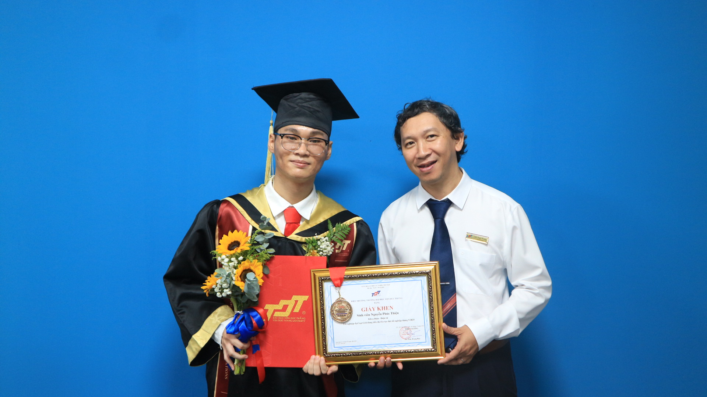

01
Machine Learning & Communications
Learning-enabled optimization and communication-efficient designs for intelligent wireless systems.
My interests span physical-layer security, reconfigurable intelligent surfaces, satellite communications, energy harvesting, and machine learning for wireless communications.


Nguyen Phuc Thien was born in Dak Nong, Vietnam. He received the B.Sc. degree in Electronics and Telecommunications Engineering from Ton Duc Thang University, Ho Chi Minh City, Vietnam, in 2025.
His research interests include reconfigurable intelligent surfaces (RIS), satellite communications, physical layer security (PLS), energy harvesting (EH), and machine learning (ML) applications for wireless communications. He also serves as the Layout Editor of the Advances in Electrical and Electronic Engineering journal.
A compact view of the areas I am currently exploring across future wireless communication systems.
Learning-enabled optimization and communication-efficient designs for intelligent wireless systems.

Performance analysis and secure design for LEO/MEO and non-terrestrial communication systems.

RIS-assisted wireless systems, hybrid architectures, and smart radio environments for future networks.

Visual understanding and digital image processing for interdisciplinary engineering applications.